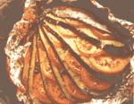

WOODSTOVE SPECIAL
M OST PEOPLE ONLY CONSIDER their woodstove useful for heating a room. And when we purchased our Woodstocker to cut oil costs, we never gave a thought to using it as a cooking stove.
But one day, bolstered by the surprising amount of heat dispensed by our stove, we tentatively approached it with tea kettle in hand. Once we were successful (with a little patience), we quickly graduated to soups and stews. Though ours doesn't have the versatility of a wood cookstove designed for kitchen duty, it does have some workable similarities.
The surface of our woodstove isn't usually hot enough for frying foods but it is perfect for simmering and slow cooking. We've even managed to use our "oven" (firebox) in much the same way as we use our charcoal grill in the summertime.
GRILLING. The hot coals will cook foil-wrapped vegetables or individual packets of meat. For baked potatoes, wrap them in heavy duty foil and place in the hot ashes of the fire. These will take from 45 minutes to one hour to cook.
Corn can be cooked in foil, too. Strip husks down to the end of the ear but don't tear off. Remove silk, butter generously, and bring husks up around corn, making sure all the kernels are covered. Wrap in double thickness of heavy-duty foil, twist ends, and nestle in hot ashes.
Sliced zucchini can be seasoned with oregano and mixed with chopped tomato and butter. Double wrap and cook in ashes. Small beets can be cooked directly on the hot coals: Just sprinkle them with water, dot with chunks of butter, and double wrap in heavy-duty foil.
For grilled chicken, marinate 2-inch pieces of chicken breast in soy sauce, some powdered ginger, a little sugar, and garlic powder to taste for two hours. Place a few pieces and some marinade in a double wrapping of heavy-duty foil. Repeat until all the chicken is wrapped tightly, then place the packets on the coals until done.
ALL-IN-ONES. Individual meals, such as the Hobo Dinner, can be cooked in pound-size coffee cans nestled in hot coals. Shape one-half pound of ground beef into a large patty the size of the bottom of the coffee can. Top with sliced onions, a sliced potato, and one-half ear of corn; sprinkle with salt and pepper. Cover can tightly with double-wrapped aluminum foil. Nestle can among hot coals, but do not set directly on top of them. This will take at least an hour to cook.
There is no way to gauge the heat of the fire, so you cannot time the cooking process. Use a two-pronged fork to check the tenderness of the vegetables (we like ours with just a little crunch left).
BAKING. There are various woodstove baking ovens on the market for cooking small baked goods, but an inverted cast iron pot has worked well for us. I place the cover of the pot upside down on the stove, put a bread pan or small muffin pan on top of that, and then top the cover and pan with inverted cooking pot.
Granted, this is a crude contraption and it does seem to take forever sometimes for the baked goods to be done, but it works-it just takes longer than a conventional oven.
COOKWARE. Traditional cast-iron cookware is by far the most effective utensil for woodstove use. Cast iron provides even heat and needs little care. Each piece should be treated to stave off rust and to prevent foods from sticking. To accomplish this, coat the pan with vegetable oil and heat for two hours in a 300° F oven. Check periodically to see if the oil has been absorbed and add more if necessary. Let cool and wipe off any excess. After you've finished cooking, clean the pot with paper towels and scour stubborn spots with salt (avoid cleaning with soap or detergents).
Cooking techniques vary little whether the fuel is wood or coal: The difference is in the heat.
Cooking techniques vary little whether the fuel is wood or coal: The difference is in the higher intensity of heat from the burning of coal. With either fuel, the heat is often not evenly distributed on the stove's surface.
The real trick is to move the pots around, depending upon your needs. If a pot is bubbling too hard, either move it to a cooler area on the woodstove or set it on a metal trivet. If more heat is required, set the pan directly over the area where the coals are burning hottest, which is usually in the center of the stovetop.
As confidence in your ability to cook on a woodstove grows, so will your assurance that almost anything cooked on a conventional range can be cooked on a woodstove. Your imagination is your greatest tool, and your cooking methods are uniquely your own.
There are several complementary vegetable/protein combinations that are the nutritional equivalent of meat. The familiar macaroni and cheese is one, as well as the less familiar bean-and-pasta combination found in this soup.
1 cup dried Great Northern beans
2 carrots, chopped
1 celery stalk, chopped
1 large onion, chopped
3 beef bouillon cubes
1/2 pound whole-wheat pasta, broken up
Freshly grated Parmesan cheese
Cover the beans with 3 cups cold water and let stand overnight. Combine the beans and bean liquid, carrots, celery, and onion in large pot. Add the beef bouillon cubes along with 3 cups water. Bring the mixture to a boil (on your conventional stove if you want to save time), and simmer covered (on woodstove), for two hours or until beans are tender. Remember to build up fire periodically to keep soup at the simmering point. Add the pasta and simmer 10 more minutes. Serve topped with grated Parmesan cheese. Makes 6 servings.
Chapatis
2 cups whole-wheat flour
1/2 teaspoon salt
2 tablespoons oil
Combine the flour, salt, and oil; mix well. Gradually add 1/2 to 1 cup water until dough is smooth, but not sticky. Knead 10 minutes. Divide into 12 egg-sized pieces. Roll out very thin on floured surface. Cook on slightly oiled fry pan until dry. Turn and cook other side. On conventional stove, bubbles will form on the chapatis. On the wood burner, they cook more slowly, resulting in a crisp, cracker-like bread. The longer they are left on the stove, the crisper they get.
Apple Crunch
4 tablespoons butter
1/2 cup quick-cooking oatmeal
4 tablespoons brown sugar
4 tablespoons chopped walnuts
1/2 teaspoon cinnamon
1 cup sugar
4 apples, peeled and thinly sliced
Melt the butter in fry pan on stove. Add oatmeal, brown sugar, walnuts, and cinnamon. Cook 1 minute. Remove from pan and set aside. Pour 1 cup hot water into pan. Add sugar and stir well. Add apples and cook-covered-until tender (approximately 45 minutes to 1 hour, depending upon the heat of the stove). Drain. Put apples in individual serving dishes and top with crunch. This can be served over ice cream or topped with whipped cream. For a quicker dessert, use canned apples or applesauce. Makes 6 servings.
|
 Eggplant wrapped in foil is wonderful when you add basil and tomato slices. |
|
|